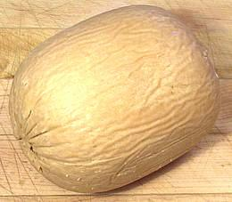
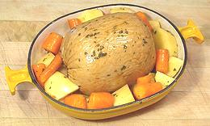
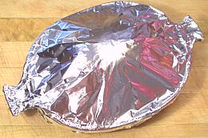
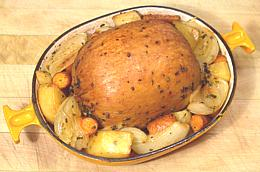

The boxed set includes the Tofurky and a tub of Mushroom and "Giblet" gravy, which is also used in this recipe. It is claimed "100% Vegan", meaning it includes no animal products whatever and is safe to serve to your over-idealistic teenage daughter (so long as she doesn't see it comes in a cardboard box and call it "over-packaged"). It is not, however, celiac safe as most of its texture is derived from wheat gluten, not tofu.
So how is it as actual food? Actually, pretty decent. The stuffing is better
than some I've had with real turkeys, the gravy is pretty decent and the
turkey, although it can't compete with real turkey, is quite edible. It
should be cut with a very sharp knife, possibly with serrations, and individual
steak knives at the table aren't a bad idea either since the outer skin is
just a touch fork resistant.
|
|
1 12 4 5 ---- 3 1 1/2 ---- 1 |
oz oz oz --- T T T --- tub |
Tofurky (1# 12oz) Potato, waxy Carrot Onion -- Baste Olive Oil Soy Sauce Sage, fresh ------ Giblet gravy |
|

OK, here it is with it's plastic wrapper carefully peeled away. A stuffed
wheat gluten sausage weighing a hair under 1 pound 12 ounces. Mercifully,
no attempt has been made to make it look like an actual turkey (all brands
may not be so discreet).

All arranged in the casserole with vegetables, all brushed with the
Baste. Oooooops! Forgot the onions for this photo - got 'em in at the 20
minute mark so all was OK.

Wrapped and ready for the oven.

Unwrapped, re-basted and browned.
U.S. measure: t=teaspoon, T=Tablespoon, c=cup, qt=quart, oz=ounce, #=pound, cl=clove in=inch, ar=as required tt=to taste
1mv_tofurk1 090104 box - www.clovegarden.com